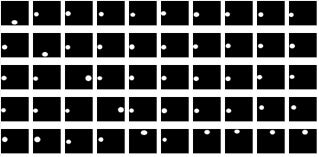

Dual-Path Attention based Network for Fundus Segmentation on OCT-Angiography
--------------------------------------------------------------------------------------------------------------------------------------------
Dual-Path Attention Network (DPANet) model for segmentation 2023.7.5.,
Permission to use copy, or modify this dataset, tool and codes for educational and research purposes.
E-mail : mafei0603（at）163.com ; 17861318579（at）163.com
Homepage : https://17861318579.github.io/LOID
--------------------------------------------------------------------------------------------------------------------------------------------
1. Dataset Description
Our constructed OpticDisc segmentation OCTA Image Dataset (ODOID), which was acquired by a SS-OCT (swept-source optical coherence tomography) system (VG200D, SVision Imaging, Ltd., Luoyang, Henan, China).
Photos are captured by a 12 mm × 12 mm SS-OCT centered on the fovea in 288 Normal human eyes. We selected 50 OCTA images from these. To be private, we delete the information of volunteers, such as sex, name and age. The optic discs are labeled in the ODOID dataset.
All images are labeled by the ophthalmologist. The ophthalmologist labeled the retinal optic discs in the ODOID dataset.
> 2.1 我们团队开发的制作ground-truth工具下载地址：MakeGroundtruthTool_v1.01（windows桌面应用程序位于.netframework2.0)。该软件是一个专门用于在复杂场景下从原始样本中获取groundtruth的工具。借助我们团队开发的图2所示的工具，可以获取地面实况图像。此应用程序在< font color = " #FF0000" >我们团队开发的ground - truth制作工具可通过以下网址下载： MakeGroundtruthTool_v1.01 (windows桌面应用程序位于. netframework2.0) 。该软件是一个专门用于在复杂场景下从原始样本中获取groundtruth的工具。借助我们团队开发的图2所示的工具，可以获取地面实况图像。该应用程序在< a href =下运行对于 Windows 10（x86 或 x64），“ https://download.microsoft.com/download/9/8/6/98610406-c2b7-45a4-bdc3-9db1b1c5f7e2/NetFx20SP1_x64.exe ” > .netframework2.0(win-x64) 。
_ _ 2.2 我们团队开发的ground-truth工具可以通过以下网址下载：MakeGroundtruthTool_v1.0（.net 5.0的windows桌面应用程序）。该软件是专门用于从原始样本中获取复杂场景下的真实情况。借助我们团队开发的图2所示的工具，可以获取地面实况图像。此应用程序在 .net 5.0 运行时(win-x86) 与 Windows 10（x86 或 x64）。MakeGroundtruthTool_v1.0 (windows desktop app at .net 5.0).This software is a specialized tool to make the ground truth from original samples under complex scene. The ground-truth images can be obtained by this tool with the help in Fig.2, which is developed by our team. This application is run under with windows 10 (x86 or x64). <
> 2.3 我们的方法（DPANet）的关键代码用于演示可以在此处下载（ Pytorch）。
key code of our approach (DPANet) for demo can be downloaded here (Pytorch).
<
> 2.4 U-Net 的 demo 代码可以在这里下载（Pytorch）。here (Pytorch). <
> <
> >
--------------------------------------------------------------------------------------------------------------------------------------------
FIGURE 1 The thumbnail view of the LOID Dataset
The Original Image

The Ground-truth of OD 
--------------------------------------------------------------------------------------------------------------------------------------------
FIGURE 2 The help for the ground-truth tool(MakeGT, it can make GT for several types of scenes.)